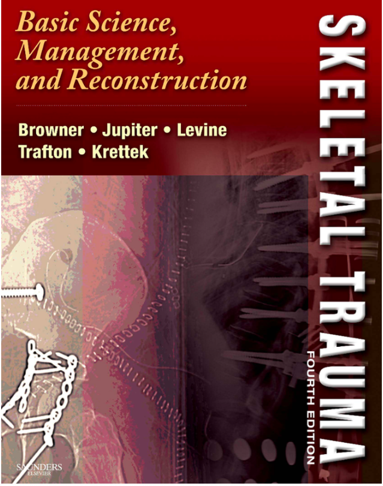
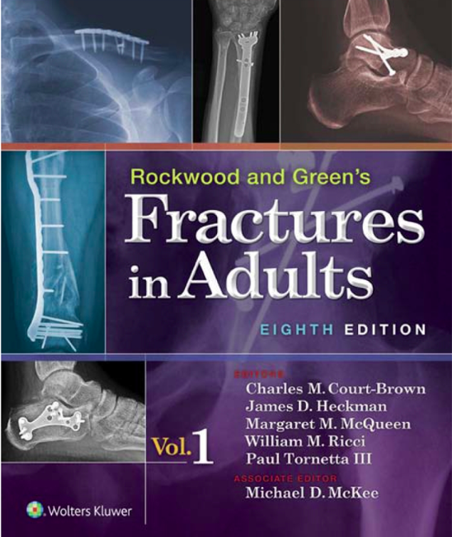
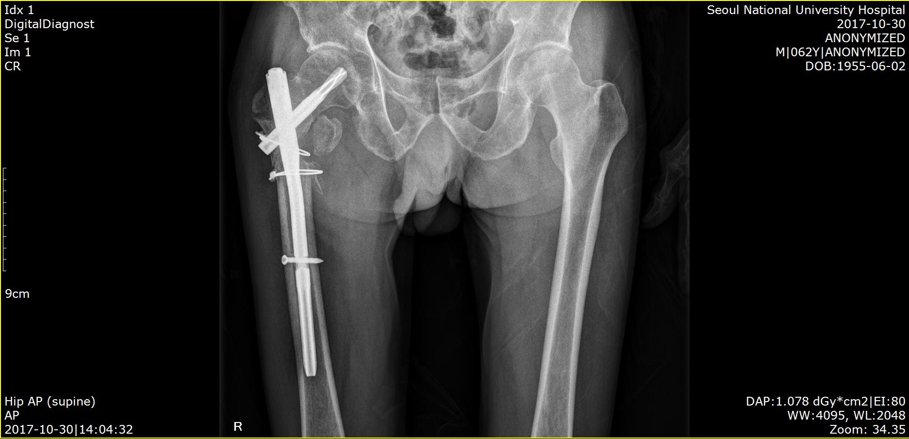
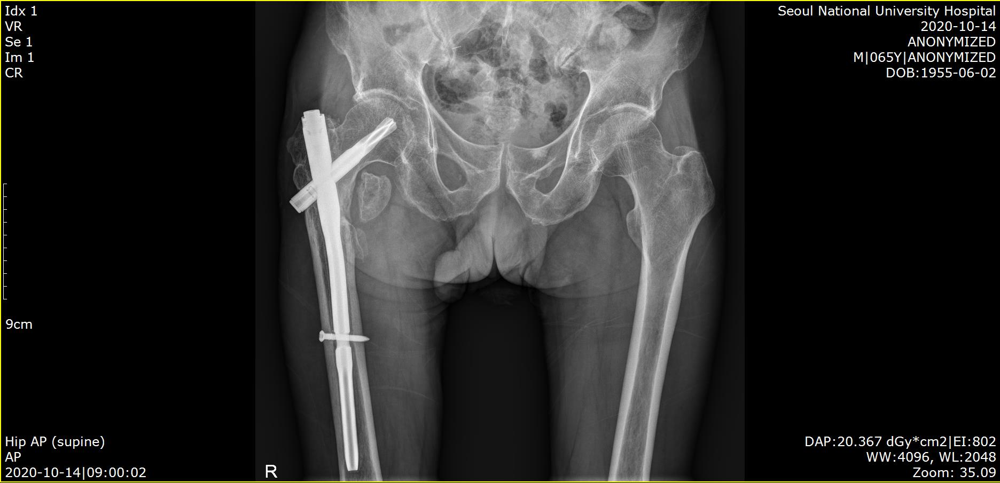
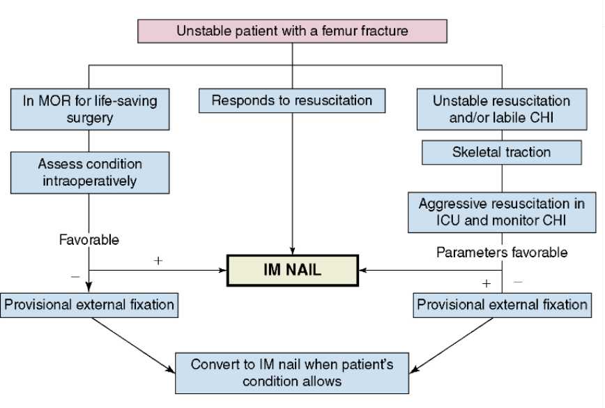

전공의를 위한
필수 교과 과정 교육_외상
서울대병원 정형외과
김민범
전공의의 연차별 수련교과과정 고시 일부 개정안
- 주요 내용
- 총칙 현행화- 수련기관 및 과목에 대한 용어를 관련 법률(전공의법)과 일치시키고, 지도 감독 학회의 소속 변화 반영
- 공통역량 신설- 전공의가 수련을 통해 갖추도록 해야 할 공통역량을 규정
- 레지던트 연차별 수련 교과 과정 개편- 양질의 전문의 양성을 위해 각 전문과목별 변화된 교육환경을 반영하고, 역량 중심으로 수련교과과정을 개선
- 인턴수련 교과과정개편
- 보건복지부고시 제 2019- 호: 2019년 2월 보건복지부 장관
2025년 개정 교육 목표
| 전공의 교육 미션 | 역량중심의 교육과 연구를 통하여 정형외과학 발전에 기여하고 국민 건강 증진에 이바지한다. |
| 전공의 교육 비젼 | 가) 체계적인 교육을 통하여 환자에게 최상의 의료를 제공한다. 나) 환자의 인권을 존중하고 건전한 윤리의식을 갖춘 전문인을 양성한다. 다) 교육자 및 연구자로서의 기본 자질을 함양한다. |
| 최종역량 | 척추, 상지와 하지에 발생하는 질환과 외상에 대한 전문적인 지식과 술기를 습득하여 진단 및 치료를 독자적으로 수행하고, 후배 전공의를 교육 지도할 수 있는 능력을 함양한다. |


1 년차 교육 내용-외상
| 지식 | 골절 및 탈구의 진단과 처치의 이해 |
| 술기 | 골절 및 탈구 환자의 병력 청취 및 신체 검진 |
| 수술 참여 | 골절 및 탈구의 비관혈적 및 관혈적 정복술 보조 |
| 단독/제1 조수 수술 | 내고정물 제거술을 지도전문의의 감독하에 보조, 시행-- 요구 |
2 년차 교육 내용-외상
| 지식 | 골절 치유 기전과 사용되는 기구의 원리 이해 |
| 술기 | 골절 및 탈구의 도수 정복 및 석고 부목 고정 |
| 수술 참여 | 골절 및 탈구의 비관혈적 및 관혈적 정복술 참여 ?? |
| 단독/제1 조수 수술 | 골절 및 탈구의 비관혈적 및 관혈적 고정술을 지도 전문의 지도 하에 보조, 시행 |
3 년차 교육 내용-외상
| 지식 | 다발성 외상 및 개방성 골절 환자의 치료 방침을 이해 |
| 술기 | 내고정 및 외고정 기구의 사용 방법 습득 |
| 수술 참여 | 다발성 외상 및 골반 비구 골절의 수술 참여 |
| 단독/제1 조수 수술 | 골절 및 탈구 환자의 응급 수술 및 외고정술을 지도 전문의 감독 하에 보조, 시행 |
4 년차 교육 내용-외상
| 지식 | 골절 합병증의 원인과 치료 방침을 이해 |
| 술기 | 골절 수술의 접근법 및 예후를 이해하고 치료 방침을 수립 |
| 수술 참여 | 골절 합병증 및 특수한 골절의 수술 보조 |
| 단독/제1 조수 수술 | 장관골 및 관절내 골절의 내고정술을 지도 전문의 감독 하에 시행, 보조 |
1 년차 교육 내용-외상
| 지식 | 골절 및 탈구의 진단과 처치의 이해 |
| 술기 | 골절 및 탈구 환자의 병력 청취 및 신체 검진 |
| 수술 참여 | 골절 및 탈구의 비관혈적 및 관혈적 정복술 보조 |
| 단독/제1 조수 수술 | 내고정물 제거술을 지도전문의의 감독하에 보조, 시행-- 요구 |
지식: 골절 및 탈구의 진단과 처치의 이해
골절의 진단
골절의 처치
• 대충 정렬 고정
탈구의 진단
탈구의 처치
• 정복 후 고정


술기: 골절 및 탈구 환자의 병력 청취 및 신체 검진
• 병력 청취 (나이/성별)
• 마음 가짐 (공감)
• Chief Complaint
• 외상 과정, 과거 병력, onset etc
• 신체 검진
• Tenderness
• ROM
• Images
• SMC check (prn, Doppler pulse check)
2 년차 교육 내용-외상
| 지식 | 골절 치유 기전과 사용되는 기구의 원리 이해 |
| 술기 | 골절 및 탈구의 도수 정복 및 석고 부목 고정 |
| 수술 참여 | 골절 및 탈구의 비관혈적 및 관혈적 정복술 참여 ?? |
| 단독/제1 조수 수술 | 골절 및 탈구의 비관혈적 및 관혈적 고정술을 지도 전문의 지도 하에 보조, 시행 |
지식: 골절 치유 기전과 사용되는 기구의 원리 이해
• 골절 치유 기전
◦ Primary healing
◦ Secondary healing
• 사용 기구
◦ 정복 기구
◦ 정복 유지 기구
◦ 고정법
▪ 내고정기
▪ 외고정기
술기: 골절 및 탈구의 도수 정복 및 석고 부목 고정
• 대상 손상
◦ 불완전 골절
◦ 완전 골절
▪ 안정성 완전 골절 » 조건부 안정 골절 (실제 용어는 X)
▪ 치료 불필요 골절
• 도수 정복 방법
◦ 손상의 역순
• 석고 부목의 단점
3 년차 교육 내용-외상
| 지식 | 다발성 외상 및 개방성 골절 환자의 치료 방침을 이해 |
| 술기 | 내고정 및 외고정 기구의 사용 방법 습득 |
| 수술 참여 | 다발성 외상 및 골반 비구 골절의 수술 참여 |
| 단독/제1 조수 수술 | 골절 및 탈구 환자의 응급 수술 및 외고정술을 지도 전문의 감독 하에 보조, 시행 |
지식: 다발성 외상 및 개방성 골절 환자의 치료 방침
• 다발성 외상
◦ 정의
▪ >1 region or organ which at least one is 'life threatening'.
▪ Cumulative severity of trauma: expressed using ISS
▪ Injury severity score (ISS): ≥ 16 or ≥ 18
◦ 치료 방침
▪ ETC (early total care)
▪ DCO
▪ EAC (Early appropriate care)

치료 방침: Orthopaedic DAMAGE CONTROL algorithm
지식: 개방성 골절 환자의 치료 방침
• 개방성 골절
◦ 정의
▪ Open fractures
- G-A classification
▪ Mangled extremity
- MESS
▪ Closed fracture
- Delayed skin problem
◦ 치료 방침
▪ ABCD
술기: 내고정 및 외고정 기구의 사용 방법 습득
• 내고정 기구
◦ Plating
▪ DCP
▪ LCP
◦ Screw
◦ Wiring
◦ IM nailing
• 외고정 기구
◦ Ilizarov
◦ 각종 Ex-Fix (fixator)
4 년차 교육 내용-외상
| 지식 | 골절 합병증의 원인과 치료 방침을 이해 |
| 술기 | 골절 수술의 접근법 및 예후를 이해하고 치료 방침을 수립 |
| 수술 참여 | 골절 합병증 및 특수한 골절의 수술 보조 |
| 단독/제1 조수 수술 | 장관골 및 관절내 골절의 내고정술을 지도 전문의 감독 하에 시행, 보조 |
지식: 골절 합병증의 원인과 치료 방침을 이해
• 골절 합병증의 종류
◦ Systemic
▪ Fat embolism = ARDS
▪ Thromboembolic disorder =DVT
▪ Multiple organ system dysfunction & failure
• Local
◦ Soft tissue and vascular problem
◦ Post-traumatic arthrosis
◦ Peripheral nerve injuries
◦ CRPS
◦ Nonunion
◦ Osteomyelitis etc
술기: 골절 수술의 접근법 및 예후를 이해하고 치료 방침을 수립
• 골절 수술의 접근법: 선택
◦ Minimal invasive; mini open
- CR IMN 6 hrs (C-arm 600) vs. OR IMN 1 hr (20)
• 골절 수술의 예후- 결정 요소
◦ 장관골: metaphysis, diaphysis, epiphysis (joint)
◦ 편평골
◦ 상지- 하지
◦ Acute vs delayed
◦ Intact vs. complicated
◦ Compliance
• 방침 수립
◦ 先勝 而 求戰
Good Luck !!!